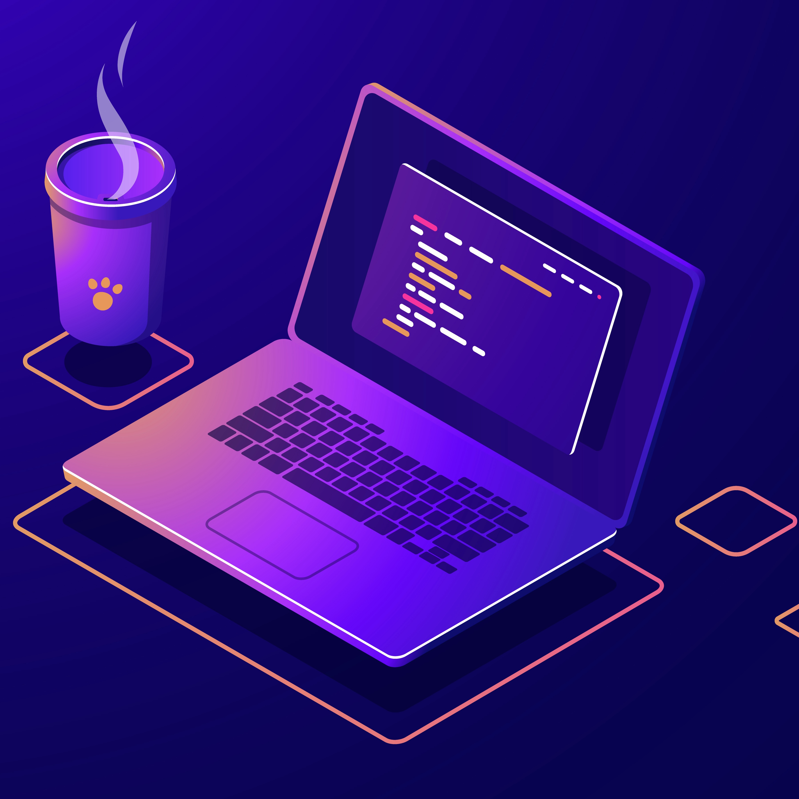
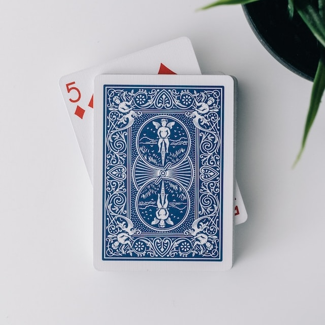

Programming is like embarking on a captivating journey filled with challenges and solutions. Whenever I'm presented with a problem, there's this exhilarating rush that comes over me – the thrill of unraveling complexities and crafting a solution from scratch. It's like being handed a puzzle and relishing the process of figuring out how to make all the pieces fit together.
In my coding toolkit, I've got a bunch of languages that I've come to love and master. There's C/C++, which feels like the backbone of programming, allowing me to dive deep into the machine and optimize performance. Python, with its clean syntax and versatility, is like a friendly companion that makes problem-solving feel elegant and straightforward. And then there's the web trio – HTML, CSS, and JavaScript – each playing a unique role in creating visually appealing and interactive websites.
Git is like my trusty time machine, helping me navigate through different versions of my code and collaborate seamlessly with others. The mere thought of 'git commit' and 'git push' brings a sense of order to the chaos of code evolution.
But wait, there's more! Docker adds another layer of excitement to the mix. It's like having a magic container that encapsulates everything needed for my applications to run smoothly, making deployment and scaling feel like a breeze.
I'm currently immersed in the Winter in Data Science program offered by the Analytics Club, and it's been an incredibly enriching experience so far. The program is like a gateway into the vast world of data science, where I get to explore the intricacies of working with data to derive meaningful insights. From statistical analysis to machine learning algorithms, every module feels like a puzzle piece that contributes to a broader understanding of the field.
Simultaneously, I've taken on the challenge of learning Flutter, a cross-platform framework for building mobile applications. Flutter feels like a creative playground where I can bring my app ideas to life with a single codebase. The hot reload feature is a game-changer, allowing me to see instant changes in my app as I tweak the code. It's empowering to think that I can develop for both Android and iOS platforms without having to start from scratch for each.
When faced with a coding challenge, I embark on a journey of problem-solving. I analyze, plan, and implement, finding joy in the process of converting a complex problem into an elegant solution. It's not just about making the code work; it's about making it efficient, readable, and sometimes even a little bit beautiful. The satisfaction of seeing a program run seamlessly after overcoming obstacles is what keeps me hooked to the thrilling world of programming. Each line of code is a stroke in the canvas of problem-solving, and the end result is a masterpiece that brings both satisfaction and the promise of new challenges to conquer.
GuitarProgrammingMagic